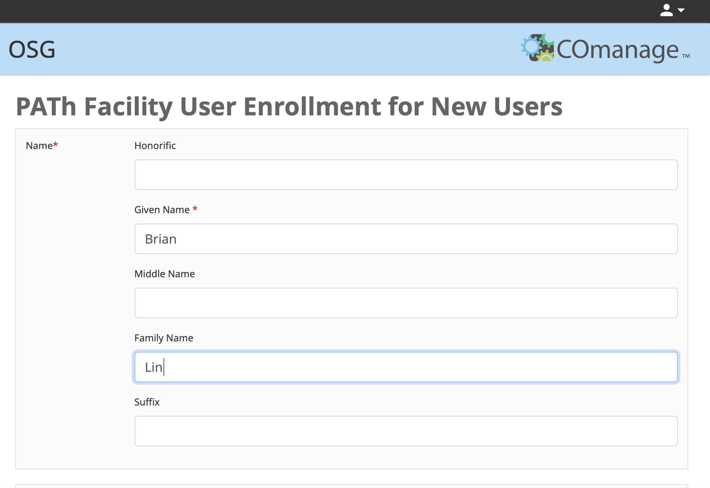
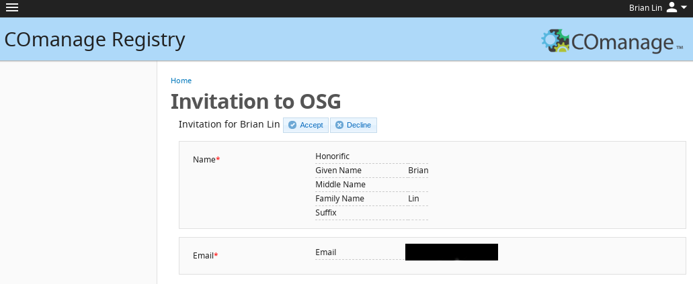

Registration and Login for the PATh Facility¶
This guide is for users who have already contacted PATh Staff about accessing the PATh Facility and have been directed to these instructions. If you have not been sent this information by PATh staff, please contact us at support@path-cc.io or fill out the PATh User Application.
To join and use the PATh Facility Access Point (ap1.facility.path-cc.io), you will go through the following steps:
- Apply for a PATh Facility Access Point account
- Have your account approved by an PATh Team member
- Log in to ap1.facility.path-cc.io
Apply for a PATh Facility Access Point Account¶
To register with the PATh facility, submit an application using the following steps:
-
Go to the account registration page. You will be redirected to the CILogon sign in page. Select your institution and use your institutional credentials to login.

If you have issues signing in using your institutional credentials, contact us at support@path-cc.io.
-
Once you sign in, you will be redirected to the "PATh Facility User Enrollment for New Users" page. Click "Begin" and enter your name, and email address in the following page. In many cases, this information will be automatically populated. If desired, it is possible to manually edit any information automatically filled in. Once you have entered your information, click "SUBMIT".

-
After submitting your application, you will receive an email from registry@cilogon.org to verify your email address. Click the link listed in the email to be redirected to a page confirm your invitation details. Click the "ACCEPT" button to complete this step.

Account Approval by a Research Computing Facilitator¶
If a meeting has not already been scheduled with a Research Computing Facilitator, one of the facilitation team will contact you about arranging a short consultation.
Following the meeting, the Facilitator will approve your account and add your profile to any relevant PATh Facility ‘project’ names. Once your account is ready, the Facilitator will email you with your account details including the username you will use to log in to the ap1.facility.path-cc.io access point.
Login¶
Once your account has been added to a PATh access point, you will be able to log in using a terminal or SSH program. Logging in requires authenticating your credientials using one of two options: web authentication or SSH key pair authentication. Additional information on this process will be provided during and/or following your meeting with a Research Computing Facilitator.
Option 1: Login via Web Authentication¶
Logging in via web authentication requires no preparatory steps beyond having access to an internet browser.
To authenticate using this approach:
-
Open a terminal and type
ssh username@ap1.facility.path-cc.io, being sure to replaceusernamewith your PATh access point username. Upon hitting enter, the following text should appear with a unique, but similar, URL:Authenticate at ----------------- https://cilogon.org/device/?user_code=FF4-ZX6-9LK ----------------- Type 'Enter' when you authenticate. -
Copy the
https://link, paste it into a web browser, and hit enter. -
You will be redirected to a new page where you will be prompted to login using your institutional credentials. Once you have done so, a new page will appear with the following text: "You have successfully approved the user code. Please return to your device for further instructions."
-
Return to your terminal, and type 'Enter' to complete the login process.
Option 2: Login via SSH Key Pair Authentication¶
It is also possible to authenticate using an SSH key pair, if you prefer. Logging in using SSH keys does not require access to an internet browser to login into the PATh access point, ap1.facility.path-cc.io.
Full details across multiple configurations are explained in our SSH Authentication guide.
Get Help¶
For questions regarding logging in or creating an account, contact us at
support@path-cc.io.